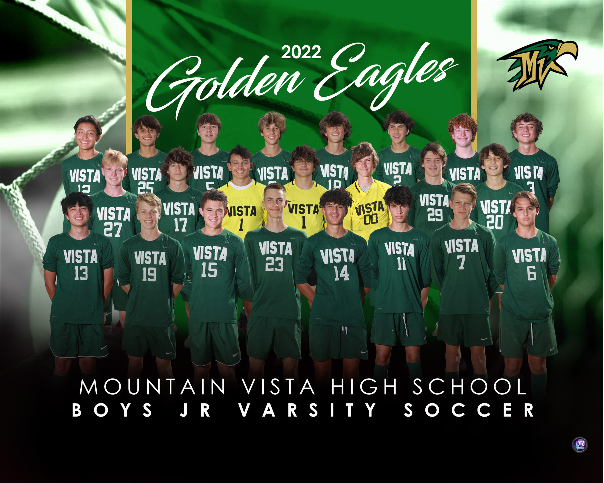

Highschool Season
I go to MVHS(Mountin Vista High School). I made the JV team as a freshman along with Andres, one of my peers in the class. He was the second highest goal scorer on the team. I only had one goal but that is still good because I played defense and got a total of maybe 2 shots all season.

I was a starter right back for MVHS. In my opinion, it was hard to play against the big junior's, only being a average sized freshman. I really liked the highschool soccer season because it helped me know more kids and I loved to get to know my teamates. I made some real friends from joining the JV soccer team.